这一节将讨论GNN的局限性，如何改进，以及GNN的鲁棒性。
本文主要参考资料为CS224W的Lecture 16，课程视频可在Youtube观看。
Limitations of GNNs
如前面课程所讲的，一个完美的GNN模型应该对应于一个邻居结构与node embedding之间的单射函数。因此，具有相同邻居结构的节点应该有相同的embedding，具有不同邻居结构的节点应该有不同的embedding。
本节课会讨论GNN的两类局限性:
1.在实际应用中，我们有时会希望两个不同位置的拥有相同邻居结构的节点拥有不同的embedding。我们称这样的任务为position-aware tasks，即使是完美的GNN也无法解决这样的问题。
2.在之前课程中提到过，GNN的表示能力是被WL test bound的，也就是说之前所介绍的GNN并不是完美的，比如之前介绍的GNN无法区分以下节点
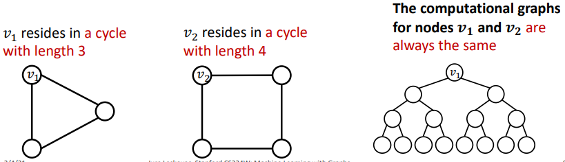
Position-Aware GNNs
对于第一个局限性，我们可以通过根据节点的位置来构建node embedding。
首先实际中的图相关的问题可以分为structure-aware和position-aware两类，或介于两者之间
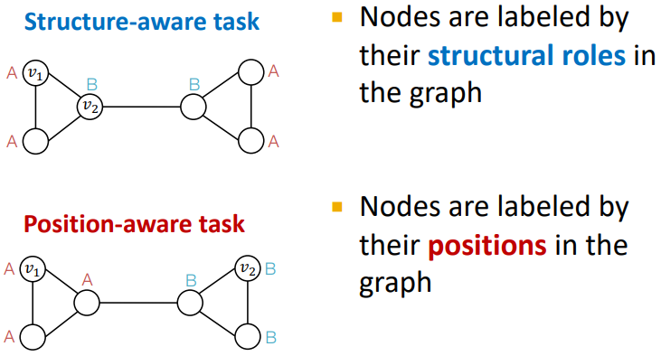
GNN通常在structure-aware的任务上表现比较好，因为对应不同结构的节点的计算图是不同的。但在position-aware的任务上，由于结构对称性，GNN会无法区分拥有相同计算图的节点。那么我们能够定义position-aware的GNN么？
一种方法是随机选一个节点做锚点，然后计算不同节点到锚点之间的距离作为特征。我们也可以将锚点扩展到多个锚点，或锚点集，来获得更强的position表示能力。比较大的锚点集优势会提供更精准的位置估计，并且可以节省所需的锚点数量
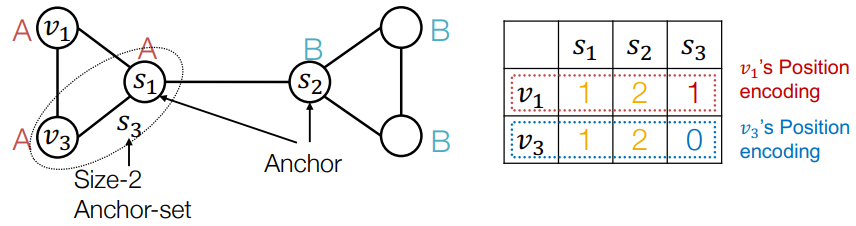
我们可以直接将这些位置信息其增广到节点特征上。需要注意的是，这些特征是permutation invariant的，因此需要神经网络保持这种permutation invariant的特性。
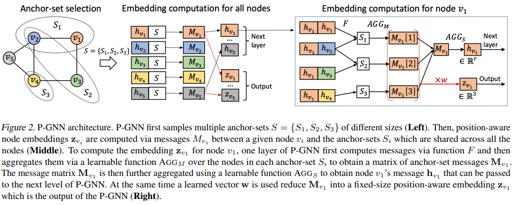
图上的$F$函数同时考虑了位置信息和特征信息
网络具体细节以及锚点集的选取可参考论文Position-aware Graph Neural Networks。
Identity-Aware GNNs
对于第二个局限性，我们可以构建比WL test表示能力更强的GNN。最简单的想法就是进行one-hot encoding，这样不同节点的计算图一定是不同的，但是这样的方法不是scalable (特征的维度与节点的数量成正比)和inductive (不能处理新加入的节点或新的图)的。
一种做法是node coloring
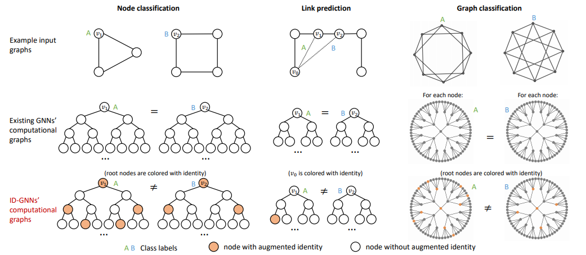
可以对不同颜色的节点采用不同的消息传递方法
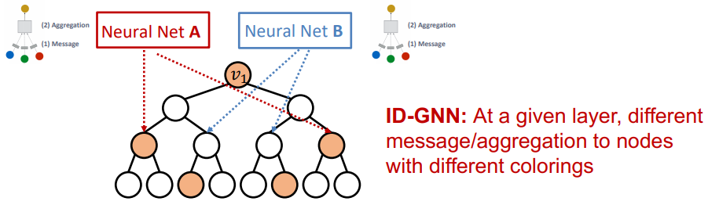
那么为什么这样的方法能够work呢？intuition是ID-GNN能够对给定节点的环结构进行计数
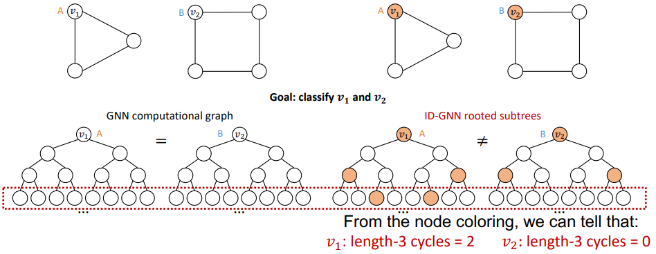
根据这个intuition，可以使用一个简化版的ID-GNN，即对不同大小的环进行计数，然后将其增广到节点特征上
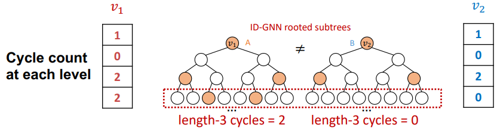
Robustness of GNNs
我们考虑半监督的节点分类的GCN模型
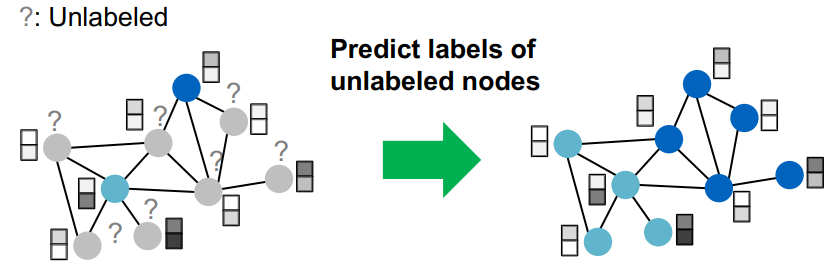
攻击者的目标是改变网络对目标节点的分类，且其可以控制网络中的部分节点
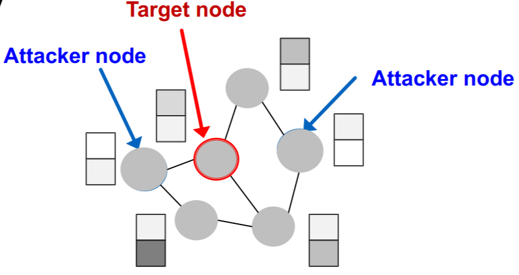
对网络的攻击可以分为两种，直接攻击与间接攻击。
直接攻击即攻击者能控制的节点就是其目标节点，那么攻击者可以改变目标节点的特征，添加或移除目标节点的边。
间接攻击即攻击者不能控制目标节点，那么攻击者可以改变攻击节点的特征，添加或移除攻击节点的边。
攻击者的目标可以用一个优化问题来表示
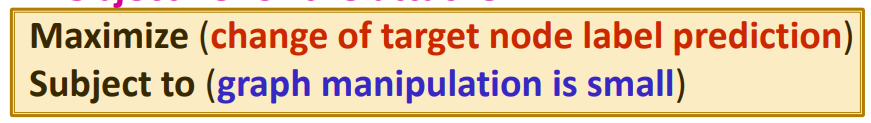
假设原始网络为
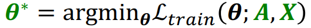
其中$A$和$X$分别是邻接矩阵和特征矩阵，其对目标节点的预测为
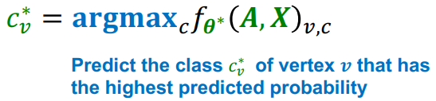
我们希望对$A$和$X$做一个轻微的扰动$\left(\boldsymbol{A}^{\prime}, \boldsymbol{X}^{\prime}\right) \approx(\boldsymbol{A}, \boldsymbol{X})$，使得新的模型
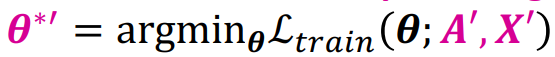
对目标节点做出不同的预测
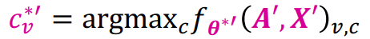
所以我们的目标函数为
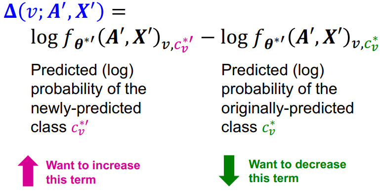
最终的优化问题为
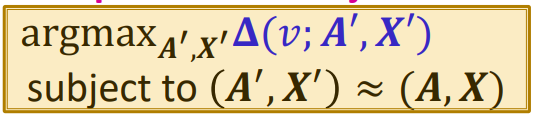
优化这个问题存在一些挑战：首先邻接矩阵是离散的，因此基于梯度的优化算法是不能用的；其次对于每一个不同的邻接矩阵和特征矩阵，都需要重新训练GCN。为了解决这两个问题可以做一些近似，具体可参考Adversarial Attacks on Neural Networks for Graph Data.
实验结果显示GCN对随机攻击与间接攻击是鲁棒的，但是对直接攻击是不鲁棒的。
References
Position-aware Graph Neural Networks